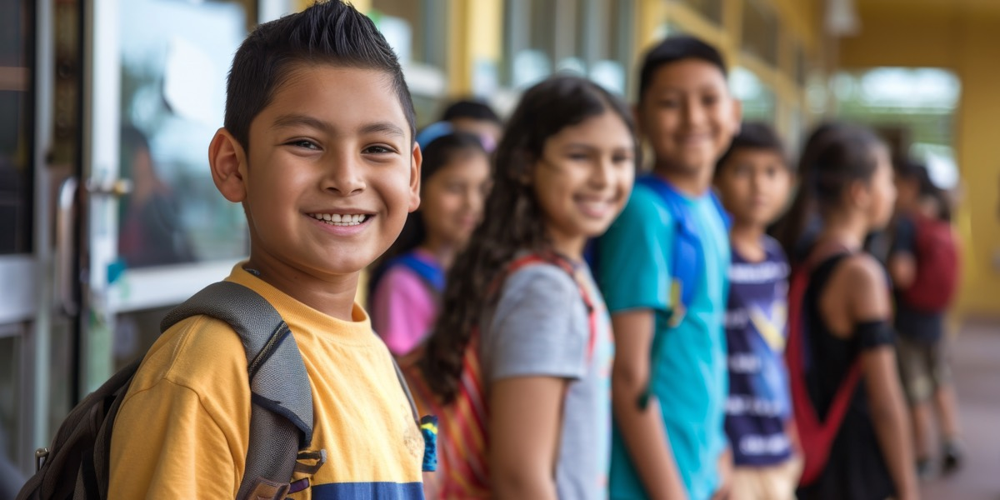
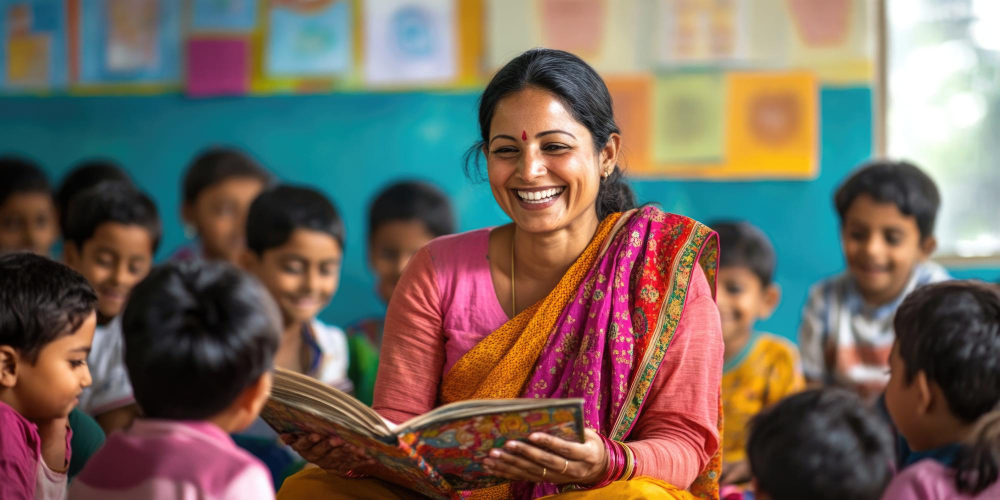
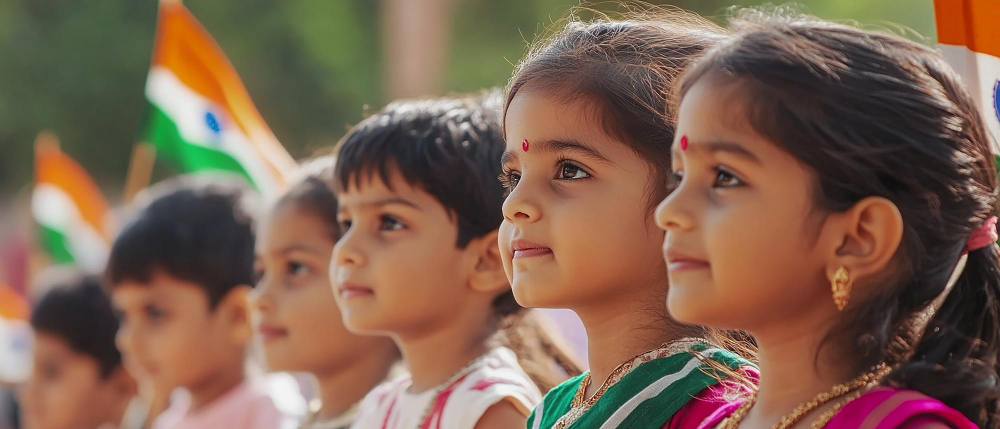
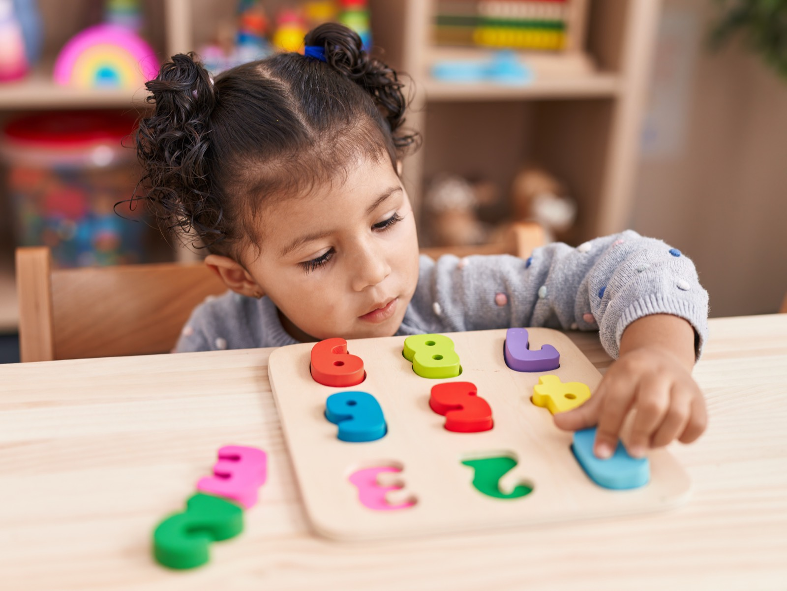
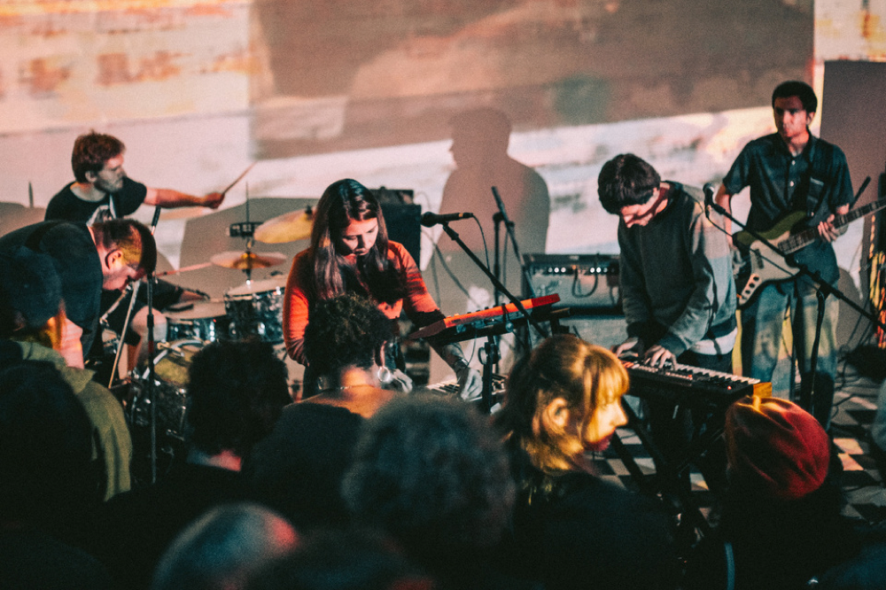

The Science of Play: Why Free Time Makes Smarter Kids
2 MAY 2025 | 6 min read
Unstructured play builds the executive functions classrooms depend on — discover what researchers actually found.
Read More2 MAY 2025 | 6 min read
Unstructured play builds the executive functions classrooms depend on — discover what researchers actually found.
Read MoreBlogs
EducationLessons
28 APR 2025 | 8 min read
Explore the differences between educational frameworks and find the one that suits your child best.
READ MORE
Blogs
EducationTeachers
21 APR 2025 | 10 min read
Discover the top considerations, benefits, and tips for selecting the ideal boarding school for your child.
READ MOREBlogs
TeachersMusic
15 APR 2025 | 7 min read
Learn how nurturing emotional intelligence can lead to better personal and academic outcomes.
READ MORE
Blogs
Online CourseProgramming
8 APR 2025 | 6 min read
Equip your children with the skills they need to navigate the digital world safely and effectively.
READ MORE
Blogs
MusicLessons
1 APR 2025 | 5 min read
Physical activity does more than just keep kids healthy—it boosts focus and cognitive abilities.
READ MOREBlogs
EducationTeachers
25 MAR 2025 | 9 min read
A deep dive into teaching philosophies to help you decide the best approach for early education.
READ MORE
Blogs
EducationLessons
23 MAR 2025 | 6 min read
Simple, playful craft ideas that keep little hands busy through every season — from paper snowflakes to flower collages.
READ MORE
Blogs
Online CourseProgramming
18 MAR 2025 | 8 min read
A comprehensive comparison of India's two most popular educational boards to guide your decision.
READ MOREBlogs
TeachersMusic
12 MAR 2025 | 7 min read
Extracurriculars are vital for developing teamwork, leadership, and time management skills.
READ MORE